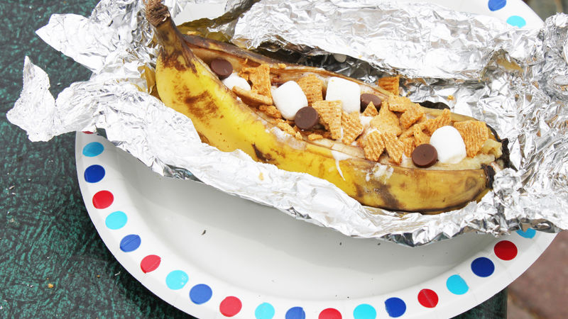

Banana boat

Description
Like a cross between a s’more and a banana split, a banana boat is a quick and easy dessert to make while camping. Just split a banana in half, stuff it with toppings, wrap it in tin foil, and place it over the fire.
Ingredients
- 1 banana
- 2 tablespoons milk chocolate
- 8 mini marshmallows
- 1 graham cracker
Steps
- Take a banana with its peel still on and cut it down the middle (along the concave side). Not all the way through, but until the tip of your knife just grazes the peel on the other side. Pull the peel and banana slightly apart.
- Stuff the chocolate and mini marshmallows (or other fillings, see notes) into the center of the banana.
- Wrap the banana in foil. Place on a campfire or grill until fillings have melted and banana has warmed through, about 10 minutes.
- Unwrap banana and top with crushed graham cracker. Enjoy!
Return to top
Return to homepage